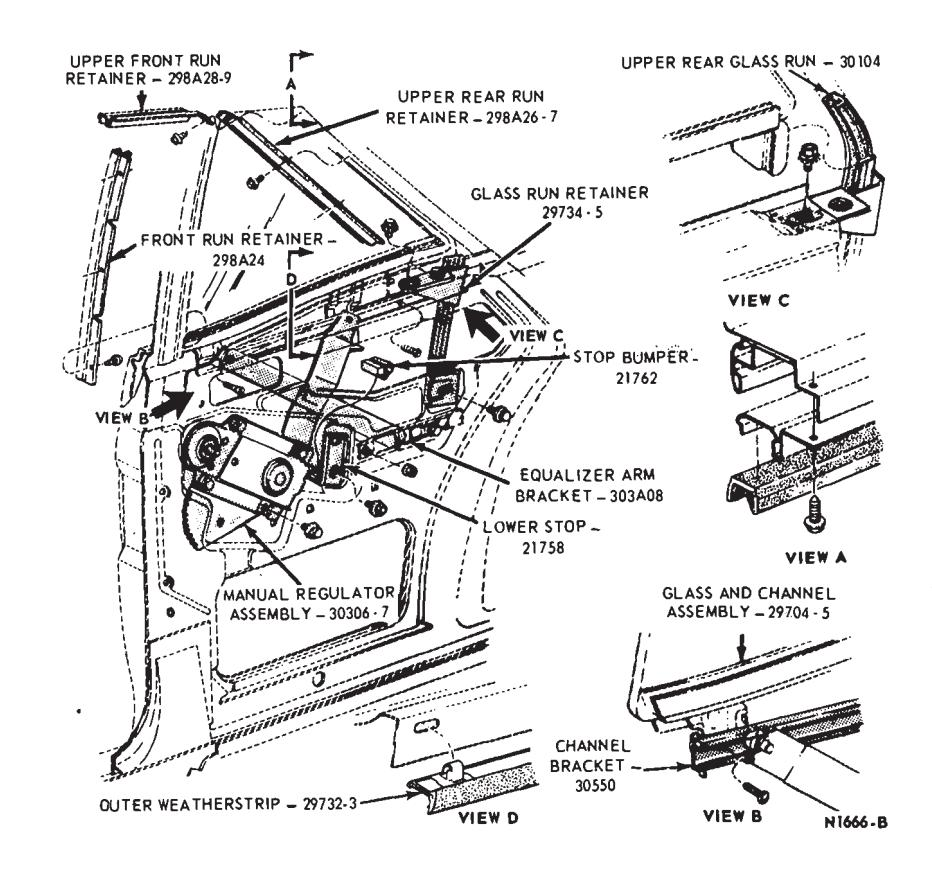
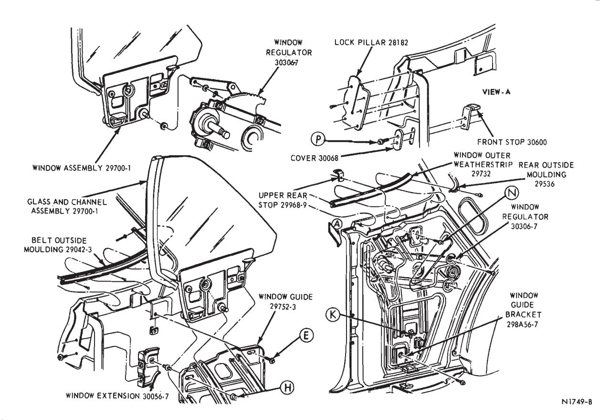
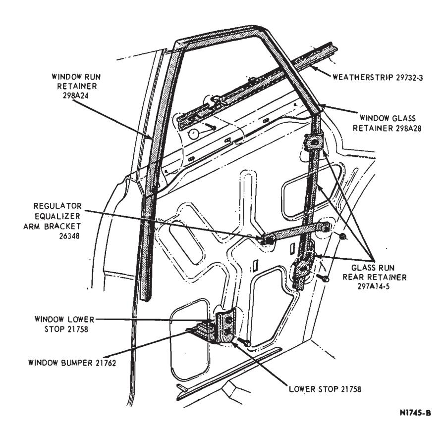
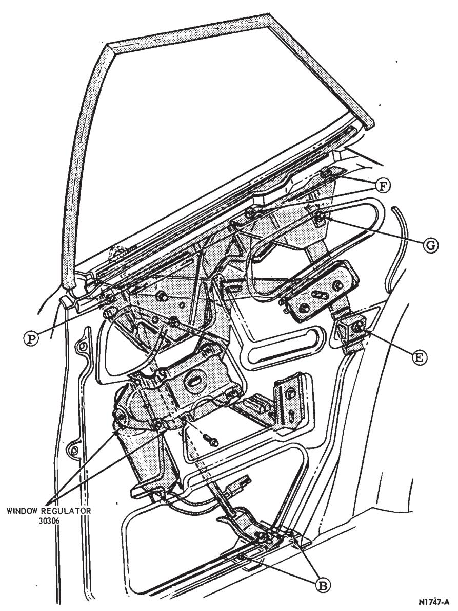
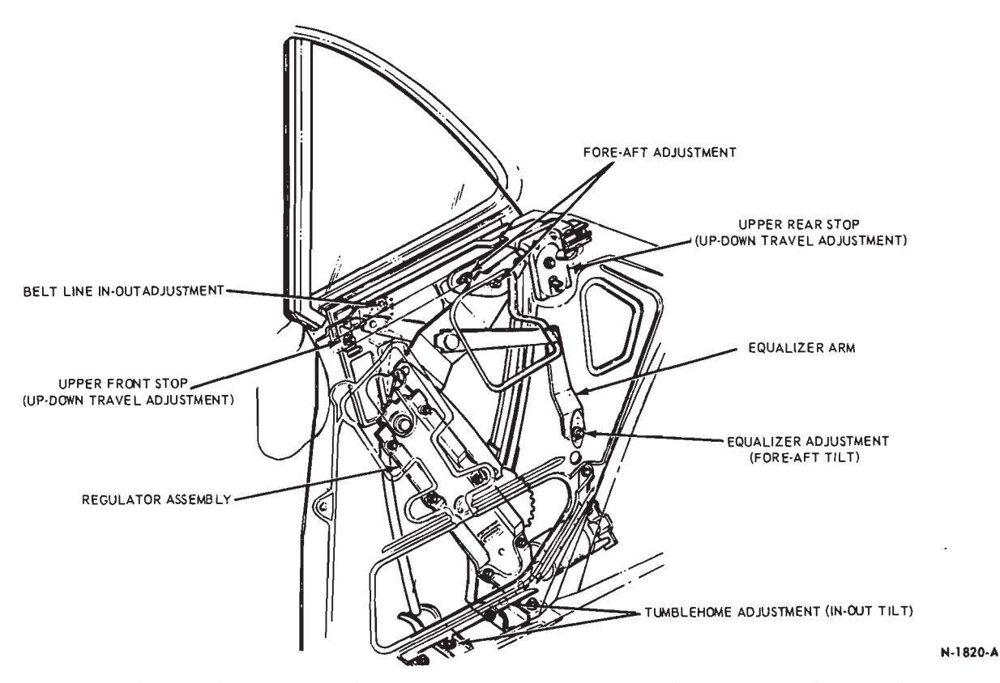
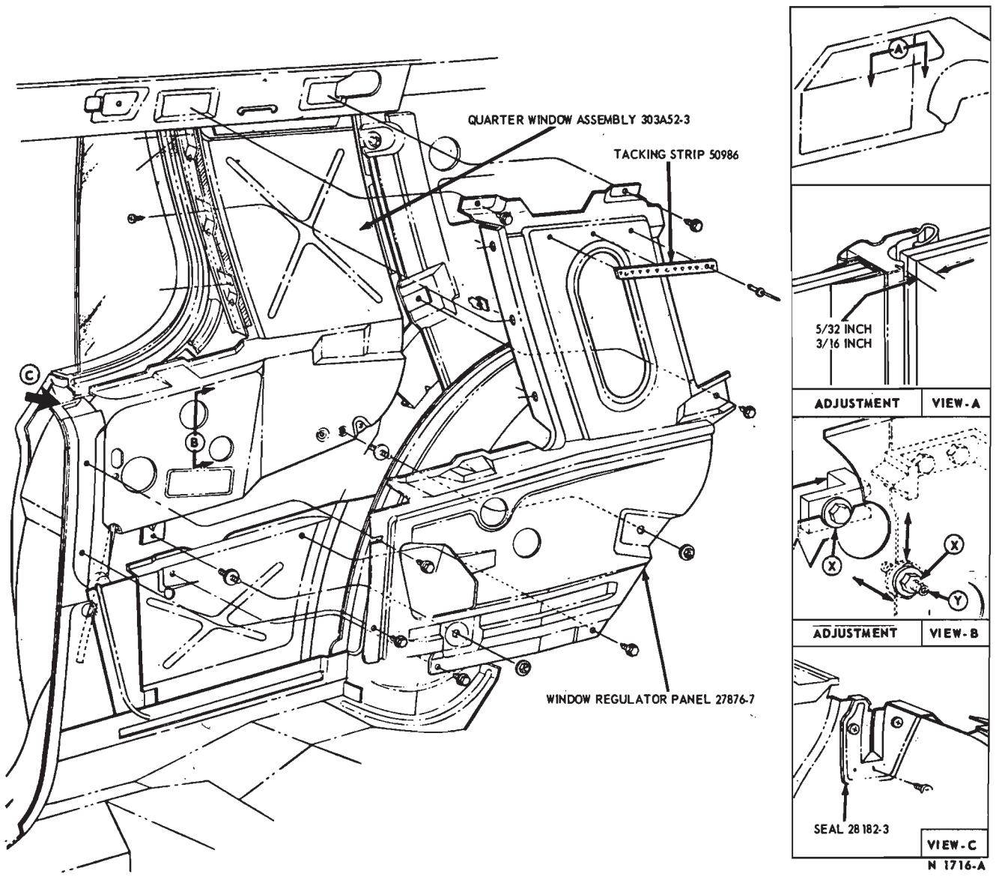
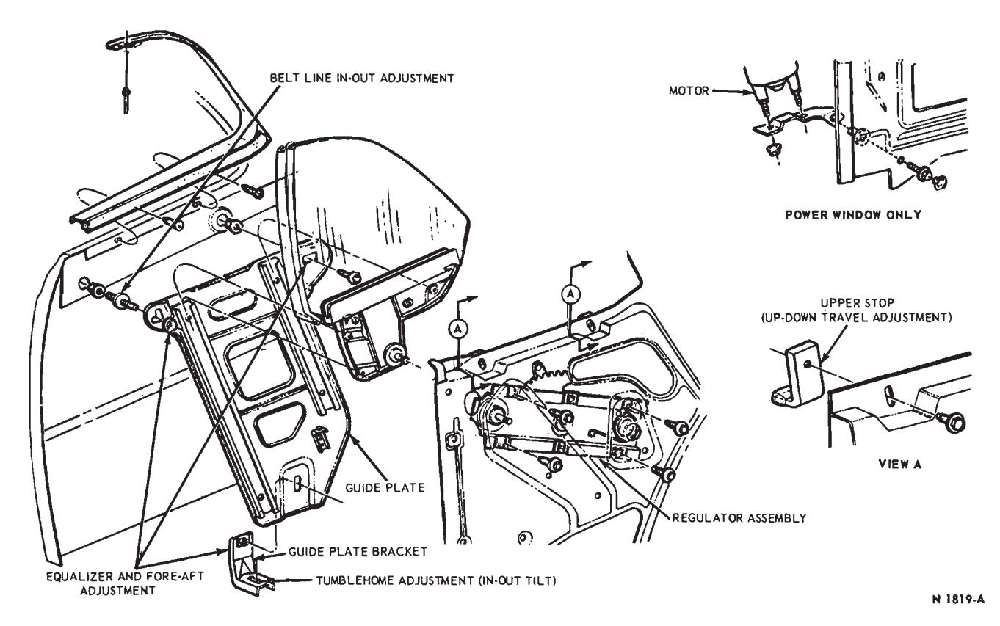

Quarter Window Glass and Mechanisms · 42-05-04
Quarter Window Glass Adjustment — Falcon Model 62
- Remove the quarter trim panel and watershield.
- To obtain proper clearance between the quarter window assembly and the quarter window glass run retainer assembly, operate the window to its full down position, loosen the screw and washer assembly retaining the bottom of the run retainer, and adjust the retainer assembly forward. After adjustment, tighten the screw and washer assembly finger tight (Fig. 1).
- To obtain proper clearance between the quarter window assembly and the quarter window glass run retainer assembly, operate the window to its full up position. Loosen screw and washer assemblies retaining the run retainer upper bracket and adjust the retainer assembly forward. After adjustment, tighten screw and washer assemblies D securely.
- Install the watershield and quarter trim panel.
Quarter Window Glass Adjustment — Fairlane and Montego — Models 63, 65 and 76
The following adjustments can be made without removing the trim panel:

Fig. 1 — Quarter Window Mechanism — Falcon — Model 62
Tumblehome (In-Out Tilt)
To adjust the tumblehome, loosen the lower guide plate retaining bolt at the bracket assembly (Fig. 2). Tilt the glass in or out until the proper glass-to-roof rail weatherstrip relationship is achieved. Tighten the guide plate bracket attaching bolt.
Belt Line In-Out and Fore-Aft Adjustment
The belt line in-out adjustment is controlled by two set screws located at the inside belt line (Fig. 2). Loosen the two screws and move the glass in or out until the quarter window glass is flush with the front door glass. Tighten the set screws.
Upper Front Stop Adjustment
Loosen the upper front stop attaching bolt. Move the glass until the correct up-down window travel is achieved. Tighten the stop retaining bolt
The following adjustments must be made with the trim panel removed:
Equalizer Adjustment
Loosen the bolt attaching the equalizer arm to the inner panel. Tilt the glass fore or aft until the top of the glass is parallel with the roof side rail. Tighten the equalizer bolt.
Upper Stop Adjustment (Complete)
Loosen both the upper front and upper rear stop attaching bolts. Move the glass until the proper up-down window travel is achieved. Tighten the stop attaching bolts.
Fore-Aft Adjustment
Loosen the lower guide plate attaching bolt at the bracket assembly (Fig. 2). Then, loosen the two upper guide plate attaching bolts. Move the glass fore or aft as required and tighten the three guide plate attaching bolts.
Quarter Window Glass Adjustment — Mustang and Cougar
The following adjustment may be made without removing the quarter trim panel:
Upper Front Stop
Loosen the two screws retaining the upper front stop at the top of the lock pillar (Fig. 3). Move the glass until the proper up-down travel is achieved, then tighten the stop retaining bolts.
If the above adjustment does not give a satisfactory window adjustment, remove the quarter trim panel and perform the following adjustments:
Tumblehome (In-Out Tilt)
Loosen the screw at the bottom of the guide plate which secures the guide bracket to the body (Fig. 3). Move the glass in or out until the glass seals against the roof rail weatherstrip. Tighten the retaining screw.
Belt Line In-Out and Fore-Aft Adjustment
Loosen the two screw and washer assemblies which retain the top of the guide plate. Move the window in or out until the quarter window is flush with the front door glass. Also, move the glass fore or aft as required. Then tighten the screw and washer assemblies.

Fig. 3 — Quarter Window Mechanism — Mustang and Cougar

Fig. 4 — Quarter Window Glass Mechanism Adjustment — Ford Model 62
Equalizer Adjustment
Loosen the screw and washer assembly at the lower guide plate bracket. Then, loosen the two screw and washer assemblies at the top of the guide plate. Tilt the glass fore or aft until the top of the glass is parallel with the roof rail weatherstrip. Tighten the screw and washer assemblies.
Upper Stop Adjustment
Loosen both the upper front stop and upper rear stop retaining bolts. Move the glass to the full up position. Move the stop firmly against the glass. Tighten the retaining screws.
Quarter Window Glass Adjustments — Ford Model 62
-
Remove the quarter trim panel and watershield.
-
Lower the window to its full down position. Loosen the lower run retainer retaining screw (Fig. 4). Move the run retainer against the window and tighten the screw and washer A, finger-tight.

Fig. 5 — Quarter Window Adjustment — Ford, Mercury and Meteor Model 63 -
Raise the window to its full up position. Loosen the upper run retaining screw and washer assemblies (Fig. 4). Move the upper portion of the run retainer assembly against the window glass. Then, tighten the upper and lower run retaining screw and washer assemblies (Fig. 4).
-
With the top edge of the window flush with the belt line, loosen the lower stop retaining screw and washer assemblies (Fig. 4). Adjust the lower stop against the lower edge of the window channel. Then, tighten the lower stop retaining screw and washer assemblies
-
Cycle the window up and down several times to insure that proper adjustment has been made. Install the watershield and quarter trim panel.
Quarter Window Glass Adjustment — Ford, Mercury and Meteor Model 63
- Remove the quarter trim panel and watershield.
- Loosen items B, E, F, G, and P (Fig. 5).
- Raise the glass to the up position to obtain a good seal with the roof rail weatherstrip.
- Position the quarter glass forward or rearward to obtain a parallel fit between the quarter glass and the door glass. Then, tighten the screws (Items B and F, Fig. 5) securely.
- Lower the glass to the full down position and tighten items E, G and P securely.
- Check the window mechanism operation.
- Install the watershield and quarter trim panel.
Quarter Window Glass Adjustment — Lincoln Continental, Ford and Mercury Models 65 and 76
The following adjustments can be made without removing the trim panel:
Tumblehome (In-Out Tilt)
To adjust the in-out tilt at the top of the glass, use a 24-inch extension and socket and loosen the front run lower retaining bolt at the bottom of the run. Also, loosen the bolt at the bottom of the rear channel for additional tumblehome adjustment. This bolt cannot be reached without removing the trim panel. Move the run in or out until the proper roof rail weatherstrip-to-window glass relationship is achieved. Then, tighten the run retaining bolt (Fig. 6).
Belt Line In-Out Adjustment
Loosen the bolt retaining the front run at the top of the run. Move the glass in or out until the quarter window glass is flush with the front door glass. Tighten the upper run attaching bolt.
Upper Front Stop Adjustment
Loosen the upper front stop retaining bolt. Move the glass until the proper up-down window travel is achieved. Tighten the upper front stop attaching bolt.
The following adjustments must be made with the trim panel removed:
Equalizer Adjustment (Fore-Aft Tilt)
Loosen the equalizer attaching bolt. Tilt the glass fore or aft until the top edge of the glass is parallel with the roof rail. Tighten the equalizer bolt.
Upper Stop Adjustment (Complete)
Loosen both the upper front and upper rear stop attaching bolts. Move the glass until the proper up-down window travel is achieved. Tighten both stop attaching bolts.

Fig. 6 — Quarter Window Mechanism — Lincoln Continental, Ford, Mercury and Meteor Models 65 and 76
Fore-Aft Adjustment
Loosen the two nuts attaching the regulator arm to the glass channel assembly (Fig. 6). Move the glass fore or aft as required and tighten the nuts.
Quarter Window Glass Adjustment — Continental Mark III
- Remove the rear seat cushion and seat back from the vehicle.
- Remove the quarter trim panel and cycle the window to the closed (forward) position.
- Loosen the screw and washer assembly X (Fig. 7) and move the window fore or aft to obtain a 5/32 to 3/16 inch parallel gap between the quarter window and the door window.
- Loosen the two nuts Y (Fig. 7) and move the window up and down as required for a proper fit to the roof rail weatherstrip and to obtain a parallel gap to the door window.
- Turn the two set screws Z (Fig. 7) in or out to obtain a proper fit with the roof rail weatherstrip and the belt weatherstrip. Then, tighten the screw and washer (Item X) and the two nuts (Item Y) securely.
- Install the quarter trim panel, seat back and seat cushion in the vehicle.
Quarter Window Glass Adjustment — Thunderbird
The following adjustments must be made with the trim panel removed:
Tumblehome (In-Out Tilt)
To adjust tumblehome, loosen the lower guide plate attaching bolt at the lower bracket. Tilt the top of glass in or out until the proper glass-to-roof rail weatherstrip relationship is achieved. Tighten the guide plate bracket lower attaching bolt.
Belt Line In-Out Adjustment
Loosen the nut from the set screw at the upper front corner of the guide plate (Fig. 8). Move the glass in or out until the quarter window glass is flush with the front door glass. Tighten the nut at the top of the guide plate.
Upper Stop Adjustment
Loosen the upper stops attaching bolts. Move the glass until the proper up-down window travel is achieved. Tighten both stop attaching bolts.
Equalizer and Fore-Aft Adjustment
Loosen the bolt at the upper rear corner of the guide plate, loosen the nut at the upper front corner of the guide plate and the bolt attaching the guide plate to the lower guide plate bracket (Fig. 8). Twist the guide plate assembly until the glass is parallel with the roof rail weatherstrip. Tighten the bolts. The fore and aft adjustment is made in the same manner except that the guide plate should be moved fore or aft to achieve proper window fit.

Fig. 7 — Quarter Window Installation — Continental Mark III

Fig. 8 — Quarter Window Mechanism — Thunderbird